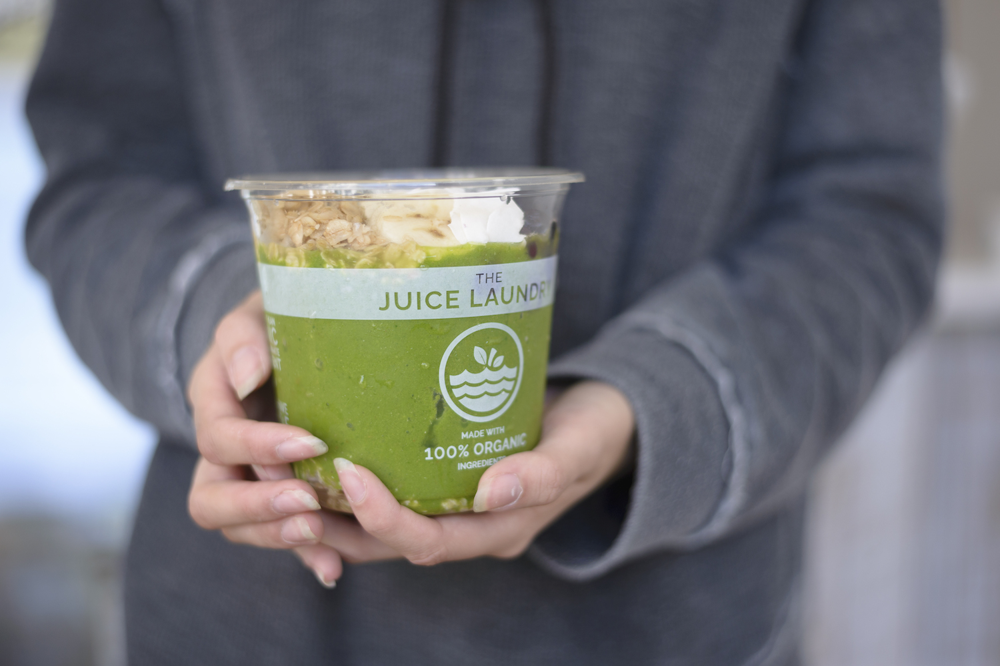

WE ARE
RAW
FRESH
CLEAN
ORGANIC
CURIOUS
PASSIONATE
TRANSPARENT
AND WE LEAVE A
GENTLE FOOTPRINT
OUR PASSION
The Juice Laundry was founded on the concept of keeping our bodies clean and healthy, starting with what we put into them. Raw, organic fruits and veggies are nature’s medicine and the foundation of preventative health care. Whether juiced, blended, or eaten whole, fresh produce is full of life-giving nutrients and enzymes. We choose to use 100% organic ingredients, 100% of the time, because the phrase “organic when possible” is often highly misleading. If we can’t find something organic on a given day, it won’t be on our menu. That’s our commitment to you, and to your health. Thanks for checking us out!